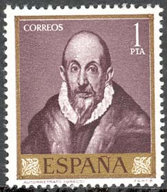
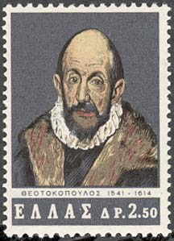
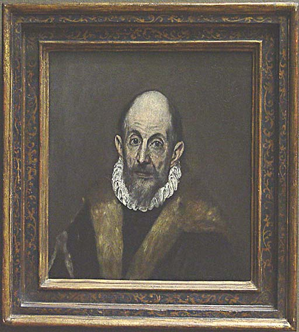
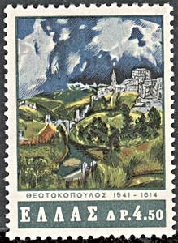
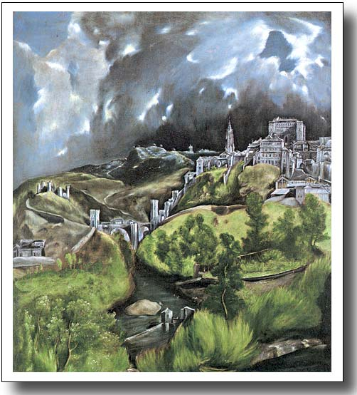
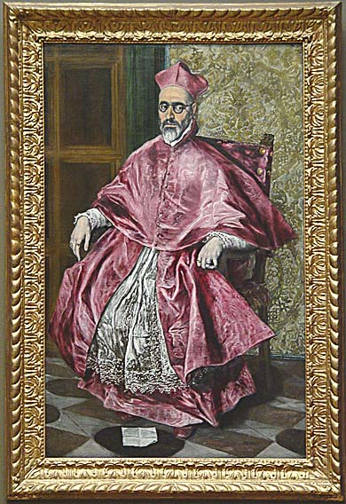
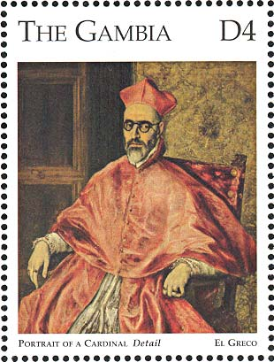

Great Works of El Greco from the Metropolitan Museum, NY
|
Opening Eyes Paintings of El Greco |

El Greco was the most outstanding painter of the
Spanish school in the 16th century. He was born in Candia, now Iráklion,
Crete (then a possession of the Republic of Venice), in 1541 and was named
Domenikos Theotokopoulos. Factual details of his youth and artistic training
are extremely scanty. He was probably first apprenticed as a painter of
religious pictures in the Greco-Byzantine tradition.
In about 1566, El Greco went to Venice, where he remained until 1570. He was
employed in the workshop of Titian and was also strongly influenced by
Tintoretto, both masters of the High Renaissance.
In 1570 he went to Rome, and he entered the Roman painters' guild in
September 1572. There the sculptural qualities of the work of Italian artist
Michelangelo inspired him, as is evident in his Pietà (1570?-1572?,
Philadelphia Museum of Art) and Purification of the Temple (1570?-1575?,
Minneapolis Institute of Arts). A study of Roman architecture also
reinforced the stability of his compositions, which often include views of
Roman Renaissance buildings. It is reported that during the pontificate of
Pius V (1566-72) El Greco, by offering to repaint Michelangelo's Last
Judgment in the Sistine Chapel, made himself unpopular in Rome and was
obliged to move to Spain.
|
 |
 |
El Greco arrived in Toledo in 1577. He quickly began work on his first Spanish commission, producing for the Church of Santo Domingo el Antiguo the sumptuous Assumption of the Virgin (1577, Art Institute of Chicago), a painting that marks a turning point in his art. Although compositionally based on Titian's Assumption (1516-1518) in Santa Maria dei Frari in Venice, the colors and spatial relationships are less Italianate.
The intense emotionalism and spirituality of El
Greco's art marks him as one of the last and greatest inheritors of the
16th-century international Mannerist style (a European art movement and
style that developed between 1520 and 1600. It was a style that rejected the
calm balance of the High Renaissance in favor of emotion and distortion.
Works of art done in this style reflected the tension that marked Europe at
this time in history). His mysticism was ideally suited to the fervent
religious climate of Counter-Reformation Toledo, but his style was not
easily transmitted, and he had no important followers.
The art of El Greco was neglected for three centuries, until the artists of
the late 19th and early 20th centuries, with their interest in distortion
and abstraction of form and in emotional expressionism, restored the
painter's reputation as one of Spain's leading masters.
(After:
http://www.island-of-freedom.com/greco.htm)

The below view of the medieval city of Toledo is the only independent landscape by the artist that survives. He has imaginatively reconfigured the city, showing the cathedral not in its actual position but to the left of the Alcázar palace. Many consider this work, painted about 1507, as a representation of menaces inherent in nature. In my opinion the real menaces, as related to this medieval city, were rather located elsewhere. We shouldn't forget that Toledo was at that time the see of the grand inquisitor and the primate archbishop of Spain, and until 1561 the capital of the Spanish empire.
 |
 |
The sitter on the portrait shown below is usually identified as Cardinal Don Fernando Niño de Guevara (1541-1609), Grand Inquisitor and Archbishop of Seville. The painting was executed c. 1600, when Inquisitor-General, and certainly before he became Archbishop of Seville. He was made Archbishop of Seville in 1601 and he sought to purchase King Philip's favor by a gift of forty thousand ducats and nearly all his plate. (please read below which was the typical wealth source of Spanish inquisitors). He is one of a number of eminent ecclesiastics of Toledo portrayed by El Greco, and it is one of his finest portraits. The splendor and richness of color is appropriate to the character and rank of the sitter. The frontal turn of the pose concentrates attention on the figure. El Greco suggests the cardinal's personality through the emphasis on his prominent glasses, the compulsive gesture of his left hand, the animated, nervous brushwork, and the singular color range.
 |
 |
In order to better understand the relationship
between the both paintings of El Greco, maybe we should refresh our memory with
some facts about the institution of Spanish Inquisition. The Inquisition was run
procedurally by the inquisitor-general who established local tribunals of the
Inquisition. Accused heretics were identified by the general population and
brought before the tribunal. The were given a chance to confess their heresy
against the Catholic Church and were also encouraged to indict other heretics.
If they admitted their wrongs and turned in other aggressors against the church
they were either released or sentenced to a prison penalty. If they would not
admit their heresy or indict others the accused were publicly introduced in a
large ceremony before they were publicly killed or sentenced to a life in
prison. Around the 1540s the Spanish Inquisition turned its fire on the
Protestants in Spain in an attempt to further unify the nation. The Spanish
Inquisition's reign of terror was finally suppressed in 1834.(Source:
http://campus.northpark.edu/history/WebChron/WestEurope/SpanInqui.html )
The Spanish Inquisition was particularly terrifying because of its inherent
characteristics. The accused never knew who their accusers were. Once arrested,
the accused heretic's properties were seized. These properties were then
administered at first by the Crown, and later by the General Inquisitor.... The
accused was also not allowed to have a lawyer or counsel for his defense, and
the names of all witnesses were kept secret from him (Roth, 1964). For More
about this institution and its preferred methods for finding the "truth"
(usually by torture), see:
http://www.bibletopics.com/biblestudy/64.htm )
The pictures of El Greco's works (excepting for the Toledo painting, which wasn't displayed) were taken by the webmaster, in Mai 2003, at the Metropolitan Museum of Art in New York, USA.
The Greece PA has issued in 1965 a set of five stamps dedicated to the 350th death anniversary of the artist. We show here the self-portrait (Sc. 816) and the storm-lashed Toledo (Sc. 817).
The Gambian stamp appeared in a sheet of nine, in 1995, in an enormous set dedicated to the 125th anniversary of the Metropolitan Museum, New York, USA. Not recommended for collecting.
The Spanish stamp showing the self-portrait of El Greco was issued in 1961, as part of a ten stamps set (Sc. 977).
Links: